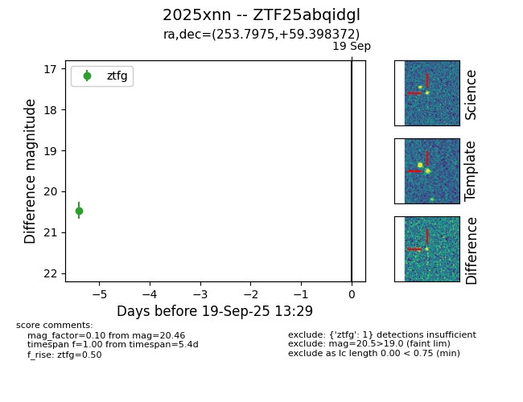

FINK: ZTF25abqidgl
Lasair: ZTF25abqidgl
ALeRCE: ZTF25abqidgl
TNS: 2025xnn
YSE: 2025xnn
ZTF25abqidgl (ztf,fink)
2025xnn (tns,yse)
equatorial (ra, dec) = (253.7975,+59.39837)
galactic (l, b) = (88.6718,+37.77452)

last ztfg=20.46
1 ztfg detections